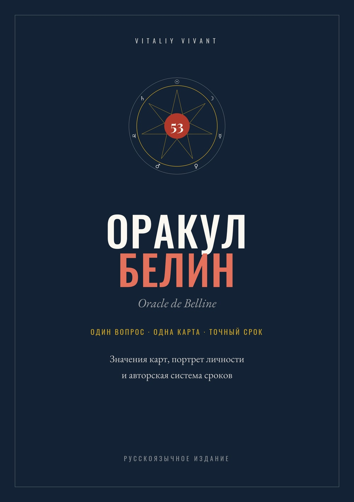

Представление.
Как карта описывает человека, его состояние или саму ситуацию.
Вы вытянули карту, помните три ее значения и все равно открываете конспект, чтобы понять, какое из них относится к вашему вопросу.
Руководство Vitaliy Vivant по работе с Oracle de Belline
23 года практики, 53 карты, 4 способа прочтения каждой карты, авторская система сроков и портрет личности.
Значение карты ищется за минуту. Гораздо сложнее понять, что именно она отвечает на заданный вопрос. Книгу я собирал именно вокруг этого места, потому что в нем застревают почти все, включая тех, кто уже отучился.
Стоимость: 48 000 ₽. Если вы позже придете в Личное наставничество по Оракулу Беллин, эти 48 000 ₽ полностью засчитываются в его стоимость.

Вы знаете значения карт, но во время расклада не понимаете, какое из них относится к вашему вопросу.
Вы открываете интернет или конспект, чтобы подтвердить собственную трактовку, и делаете это даже тогда, когда клиент сидит напротив.
Отдельная карта читается нормально, а сложить из нескольких карт связный ответ не выходит.
Вы боитесь сказать человеку не то и этим ему навредить.
Вы прошли 1 курс, 2, 6, и все равно ощущаете, что системы у вас нет.
Последний пункт я вижу в заявках чаще остальных. Люди пишут почти одинаково: отучилась, а знаний нет.
Почти везде учат значениям карт. Но карта в раскладе не существует сама по себе, она всегда отвечает на конкретный вопрос, и от того, какой это вопрос, зависит, какое значение сейчас работает.
Пока вопрос не определен, любой список трактовок превращается в выбор наугад. Отсюда и домыслы, и ступор, и потребность в подтверждении со стороны.
В книге эта проблема закрыта структурой. Для каждой из 53 карт разобраны четыре разных прочтения.
Как карта описывает человека, его состояние или саму ситуацию.
Какую позицию предлагает занять Оракул и что имеет смысл делать.
Куда движется ситуация и как она может развиваться дальше.
Что карта говорит, когда вопрос касается результата задуманного.
Сначала вы определяете тип вопроса, затем читаете карту в той функции, в которой она выпала. Выбирать из длинного списка значений больше не нужно.
Двенадцать глав, выстроенных как последовательная система работы, а не как справочник значений.
Все 53 карты Оракула, каждая в четырех прочтениях. Это больше двухсот отдельных разборов.
Отдельная глава о том, как формулировать вопрос: где нужен открытый вопрос, где закрытый, чем вопрос-совет отличается от вопроса о развитии событий и как разбить одну большую проблему на несколько точных запросов.
Портрет личности по каждой из 53 карт.
Таблица сроков на всю колоду с планетой, знаком зодиака, днем недели, месяцем и частью месяца.
История колоды, устройство планетарных семей и порядок ведения консультации от первого вопроса до финального ответа.
Сложную ситуацию не нужно вытаскивать одним большим раскладом.
Вы задаете первый точный вопрос и получаете на него ответ. Затем формулируете следующий вопрос уже с учетом того, что Оракул показал. Потом третий. Картина собирается по шагам, и на каждом шаге вы понимаете, откуда взялся ответ.
Так исчезает главная проблема, о которой мне пишут: карты перестают быть набором разрозненных значений, из которых нужно героически сложить рассказ.
С Оракулом Беллин я много лет назад начал работать именно из-за времени. Планетарная структура колоды позволяет читать срок так, как не позволяет ни одна знакомая мне система.
В книге собрана моя собственная система работы со сроками. При чтении учитываются планета карты, день недели, месяц, знак зодиака, часть месяца и признаки возможной задержки.
Срок не назначается механически по одному признаку и не выдается как гарантированная дата. Вы видите всю временную логику карты и учитесь сопоставлять ее с заданным вопросом.
Каждая из 53 карт получила дополнительное портретное значение.
По одной карте можно описать характер человека, его внутреннее состояние, настоящие мотивы и то, как он ведет себя рядом с другими.
Оракул перестает быть инструментом только событийного прогноза и начинает говорить о самом человеке, который в ситуации участвует.
Тем, кто впервые взял Оракул Беллин в руки и хочет сразу получить систему, а не собирать разрозненные трактовки по интернету.
Тем, кто уже практикует с клиентами и хочет добавить в работу инструмент, дающий ответ на вопрос «когда».
Тем, кто работает с другими системами и ищет метод, где карта отвечает на конкретный вопрос, а не описывает ситуацию вообще.
Тем, кто с Беллин уже знаком, но хочет точнее ставить вопросы, читать сроки и пользоваться портретом личности.
Тем, кто ищет короткий список значений, чтобы быстро посмотреть карту и закрыть файл. Для этого достаточно любой бесплатной подборки.
Тем, кто хочет получить готовые схемы раскладов на все случаи жизни. Здесь другой принцип работы.
Тем, кто ждет стопроцентных дат и гарантированных предсказаний. Я такого не обещаю и в книге объясняю, почему.
Посчитайте, во сколько вам обошлись пройденные курсы. У большинства людей, которые приходят ко мне на разбор, за спиной от одного до шести обучений, и почти все пишут одну и ту же фразу: системы все равно нет.
Книга стоит 48 000 ₽, остается у вас навсегда и не устаревает, потому что значения карт традиции Беллин не меняются.
Если вы позже решите продолжить работу со мной индивидуально и придете в Личное наставничество по Оракулу Беллин, вся стоимость книги засчитывается в стоимость наставничества.
Вы не платите эти 48 000 ₽ второй раз. В этом случае книга фактически достается вам без отдельной стоимости, а покупка сегодня становится первым оплаченным шагом внутрь системы.
Да. Книга читается с нуля и не требует, чтобы колода уже лежала у вас на столе. Значения, портреты и сроки разобраны так, что вы понимаете систему до первой покупки колоды и после нее работаете уже осознанно.
Оракул Беллин - самостоятельная система, а не дополнение к Таро. Ее главное отличие в том, что она отвечает на вопрос «когда» через планетарную структуру колоды. Именно за этим ко мне чаще всего и приходят практикующие тарологи.
Книга построена последовательно: сначала как задавать вопрос, потом как вести консультацию, потом карты. Половина людей, которые приходят ко мне, начинали ровно с нуля.
Книга в электронном формате. Сразу после оплаты она приходит вам в телеграм-боте, поэтому при оформлении обязательно укажите ваш телеграм.
Оплата проходит на защищенной странице Prodamus. Оплатить можно и российской картой, и картой другой страны. Я сам живу во Франции и получаю оплаты из разных стран.
Оставьте свои данные и переходите к оформлению заказа.